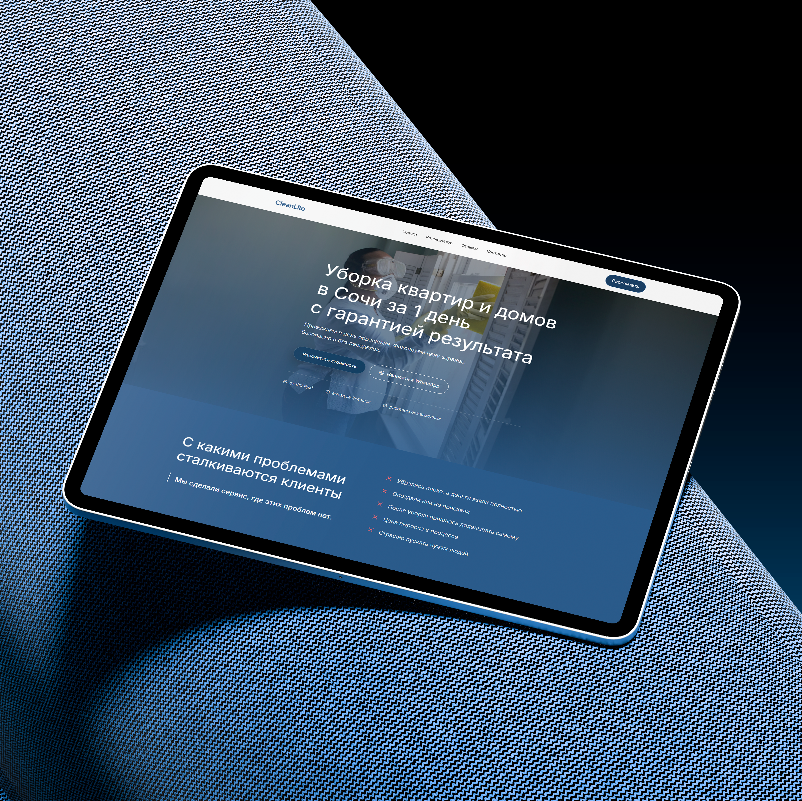

Сайт для сервиса клининга

О проекте
Мы разработали чистый и современный сайт, который формирует доверие и превращает посетителей в клиентов. Удобная навигация, быстрая загрузка, полная адаптивность и акцент на простоту заказа услуг в несколько кликов.
Перейти на сайтЗадача и
Решение
Цель: Создать легкий, визуально «свежий» и понятный сайт для сервиса клининга, который подчеркнет надежность, качество услуг и упростит процесс оформления заявки. Важно было сразу донести ценность сервиса — экономию времени и безупречную чистоту — без перегрузки пользователя лишней информацией.
Решение: Мы сделали ставку на светлую цветовую гамму, ассоциирующуюся с чистотой и порядком, и добавили аккуратные анимации, создающие ощущение легкости. Структура сайта построена вокруг пользовательского сценария: от знакомства с услугами до быстрого оформления заказа. Интерактивные элементы и микроанимации помогают вовлекать пользователя и делают взаимодействие с сайтом интуитивным и приятным.